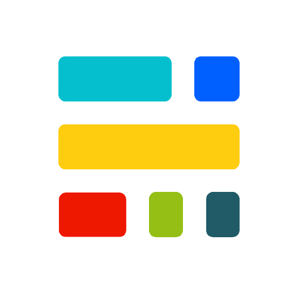

tinkerhub/cetkr"No matter what anybody tells you, words and ideas can change the world." — Dead Poets Society
In a world driven by rapid technological advancements, we often focus on the tools and innovations that lie beyond us. But the question is: what lies within? With the renewed tinkerhub/cetkr chapter, we believe that the greatest resource is not technology itself, but the passionate learners behind it and the fundamental spirit of curiosity and creativity that drives them. We are surrounded by knowledge, technology, and opportunities. Yet, the true measure of our potential is defined by our willingness to learn, collaborate, experiment, and create. This Vision serves as a blueprint for the year ahead, a commitment to creating a culture of learning, innovation, and collaboration within our campus. Through initiatives, events, projects, and shared experiences, we aim to create opportunities that inspire us to discover Ourselves.
Live.Life
Team tinkerhub/cetkr